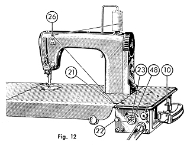
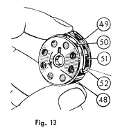
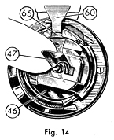
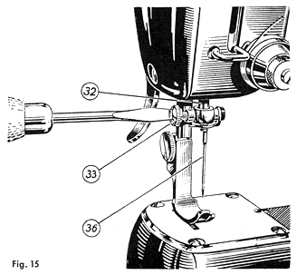
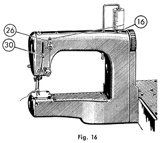
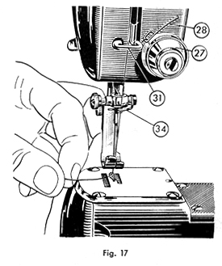
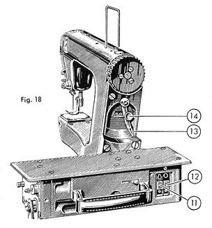
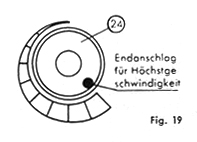
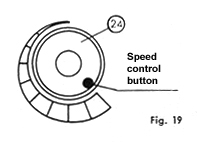

|
GEBRAUCHSANWEISUNG FÜR
DIE ELEKTRISCHE KOFFERNÄHMASCHINE FREIA Teil Drei |
Mewa Freia Instruction Manual Part Three |
| Spulen | Bobbins | |
|
Durch Vorziehen des Schalthebels
10 das Nähgetriebe auskuppeln. Durch langsames Drücken
des Kniehebels Nach Abziehen der Spule Schalthebel zurückdrücken. Nähgetriebe schaltet dann von selbst wieder ein. |
Pull the stop motion lever 10 forward. Place the bobbin 48 on the bobbin spindle 23. Pull the thread through the upper thread guide 26 and through the thread guide on the case 21, once around the grooved spindle 22 and once around the bobbin in the direction of the arrow. Slowly press the knee lever to the right to wind the bobbin. Do not over fill the bobbin. After removing the bobbin push the stop motion lever back to resume normal sewing. |

| Einlegen der Spule in die Spulenkapsel | Inserting the Bobbin | |
| Klappe
5 am Freiarm 4 öffnen, mit dem Zeigefinger Klinke 47 an der Spulenkapsel
46 öffnen und Spulenkapsel herausnehmen (Fig. 14).
Spule 48 so in die Spulenkapsel
einsetzen, daß sie sich bei Spulenkapsel an der Klinke
fassen, auf den Greiferzapfen aufstecken und drehen, bis sie sich ganz
einschieben läßt. Klinke loslassen. Jetzt darf die Spulenkapsel
nicht herausziehbar sein. Klappe |
Open the flap 5 on the freearm 4. With index finger open the latch 47 on the bobbin case 46, and remove the bobbin case. (Fig. 14). Place the bobbin 48 into the bobbin case so that the thread pulls counterclockwise. Draw the thread into the slot 50 and under the tension spring 51 and into slot 52 (Fig. 13). Hold the bobbin case by the latch and place it on the spindle and turn until it is pushed in all the way. Release the latch. At this point you should not be able to pull out the bobbin case if it is seated correctly. Close the flap. The end of the thread should hang free out of the top of the flap by about one centimeter. |
|

|

|
| Einsetzen der Nadel | Setting the Needle | |
| Durch
Drehen des Handrades nach vorn Nadelstange 32 in Hochstellung bringen, Spannschraube
33 lockern, Nadel 36 (System 705) mit Fläche nach links in die Stangennut
der Nadelstange einführen und bis zum Anschlag hochschieben. Spannschraube
mit dem Schraubenzieher wieder anziehen.
Die Nadelstärken für die verschiedenen Stoffe sind auf der dritten Umschlagseite angegeben. |
Turn the balance wheel toward you until the needle bar 32 is at the highest position. Loosen needle clamp screw 33. Insert needle 36 (System 705) into the needle clamp as far as it will go, with the flat side to the left. Using a screwdriver tighten the needle clamp screw. Needle sizes for various fabrics are given on page 3 of the cover. |

| Einfädeln des Oberfadens | Upper Threading | |
|
Garnrollenhalter nach vorn schwenken, Garnrolle aufschieben, Halter wieder zurückschwenken, so daß sich die Garnrolle auf dem Verschlußpilz 16 dreht. Faden führen |
Swing the spool pin towards
the front. Place spool of thread on pin and swing back so that the thread
will turn on the spool catch 16. Thread path: from the spool |

| Heraufziehen des Unterfadens | Bringing Up the Bobbin Thread | |
| Handrad nach vorn drehen, bis Fadenhebel fast in Hochstellung. Durch Ziehen am Oberfaden den Unterfaden hochholen. Beide zwischen Nähfuß und Stichplatte ca. 10 cm lang nach hinten legen. | Turn the balance wheel toward you until the take-up lever is almost at the highest position. Pulling on the end of the needle thread will bring up the bobbin thread. Place both threads back under the presser foot about 10 cm long. |

| Nähen | Sewing | |
|
Motor und bei Bedarf Licht mittels der beiden Schiebeschalter (12 und 11) am Motorgehäuse, einschalten. Stichlänge (siehe Seite 13) einstellen, Stoff unterlegen, Nähfuß senken. Die Maschine durch Rechtsdruck des Kniehebels in Gang setzen. Nach Beendigung der Naht Nadel in die höchste Stellung bringen, Nähfuß heben und erst dann die Arbeit nach hinten wegziehen. |
Turn on both the motor and light switch (12 & 11) located on the motor housing. Set the stitch length (see page 13). Place fabric beneath presser foot, lower presser foot. Push on the knee lever to the right. To remove the work bring the needle to the highest position, raise the presser foot, pull the work toward the back. |

| Sticheinstellung | Adjusting the Stitch | |
| Die
Festlegung der Stichlänge und die Einstellung auf Vorwärts - Rückwärtsstich erfolgt durch den Stichstellhebel 13 (in Fig. 18). Bei Vorwärtsstich (Stoff wird nach hinten bewegt) Stichstellhebel nach hinten drücken, bei Rückwärtsstich Hebel nach hinten drücken, bei Rückwärtsstich Hebel nach vorn ziehen. Die Umschaltung vor - zurück kann während des Nähens und im Stillstand erfolgen. Je weiter die Anschlagschraube 14 (in Fig. 18) herausgedreht und der Hebel aus seiner Mittelstellung bewegt wird, desto größer wird der Stich. Auf der dritten Umschlagseite sind die Stichlängen für die verschiedenen Stoffarten angegeben. Zum Stopfen wird der Hebel in die Mittelstellung gebracht. |
The stitch adjustment lever 13 (in Fig. 18) regulates the stitch length and setting forwards or reverse. To sew forwards push the stitch adjustment lever towards the back. To sew in reverse pull the lever forward. Switching between forwards and reverse can be done while sewing or standing still. The stitch length screw 14 (in Fig. 18) can be loosened and the lever moved from its middle position; the larger the stitch. The third page of the cover gives stitch lengths for various fabrics. For darning the lever should be in the middle position. |
|
| Regelung der Geschwindigkeit | Controlling the Speed | |
| Die Geschwindigkeit
der Nähmaschine kann von der kleinsten bis zur größten
Stichzahl stufenlos geregelt werden.
Zur Vermeidung von Ermüdungserscheinungen bei längerem Nähen mit kleinerer Geschwindigkeit kann jeder beliebige Zwischenanschlag mittels des Knopfes 24 eingestellt werden. |
The speed of the sewing machine can be precisely regulated with the speed control button 24. It can be set to any preference to alleviate fatigue for lengthy sewing projects or to obtain greater control. On Fig. 19 the black circle indicates the highest speed setting. |
|

|

|
| Die richtige Fadenspannung und ihre Regelung | To Regulate the Tension | |
| Die Fadenspannung wird im Werk für mittlere Stoffstärken und das entsprechende Nähgarn eingestellt. Die Naht sieht dann so aus wie Figur 20. | When both upper and lower tension are properly adjusted the stitches will look like Fig. 20. |
| Erscheint der Oberfaden auf der Unterseite (Fig. 21) oder bilden sich auf der Unterseite Schlingen, so ist die Oberfadenspannung zu verstärken. Zu diesem Zweck wird die Spannungsmutter 29 (in Fig. 23) nach rechts gedreht. | If the upper thread shows on the bottom (Fig. 21) or forms loops on the bottom, the upper tension needs to be increased. Turn the tension nut 29 (in Fig. 23) to the right. |
| Erscheint der Unterfaden auf der Oberseite (Fig. 22) so ist die Spannungsmutter etwas zurückzudrehen. | If the lower thread shows on the top (Fig. 22), then turn the tension nut to the left. |
| Nur in Ausnahmenfällen wird bei Figur 21 die Unterfadenspannung zu lockern bzw. bei Figur 22 fester zu ziehen sein. Dies geschieht durch Heraus- oder Hineindrehen des Spannungsfederschräubchens 49 (in Fig. 13) der Spulenkapsel. | On rare occasions the lower thread tension will be too loose in Fig. 21 and too tight in Fig. 22. This is adjusted on the bobbin case (in Fig. 13) by turning the bobbin tension screw 49. To increase tension tighten screw; to decrease loosen screw. |